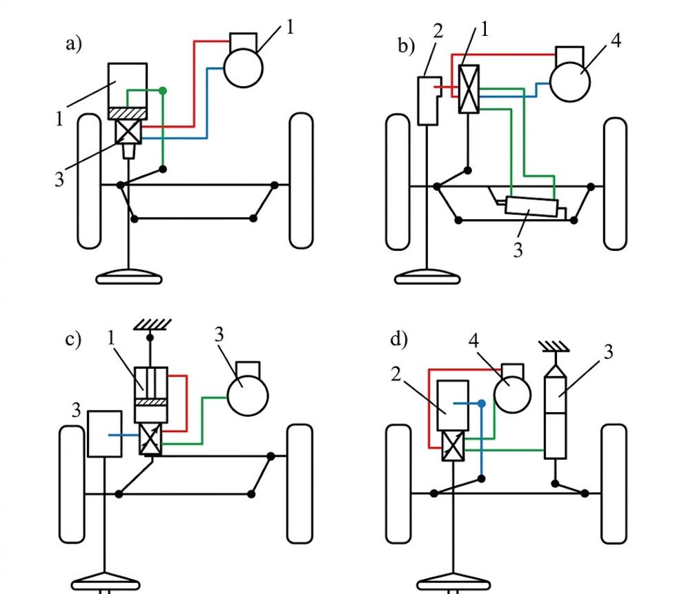
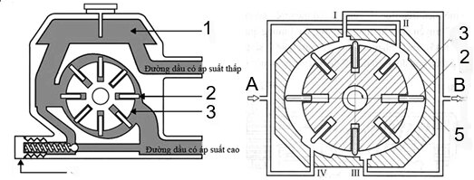
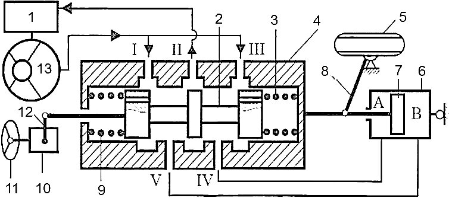
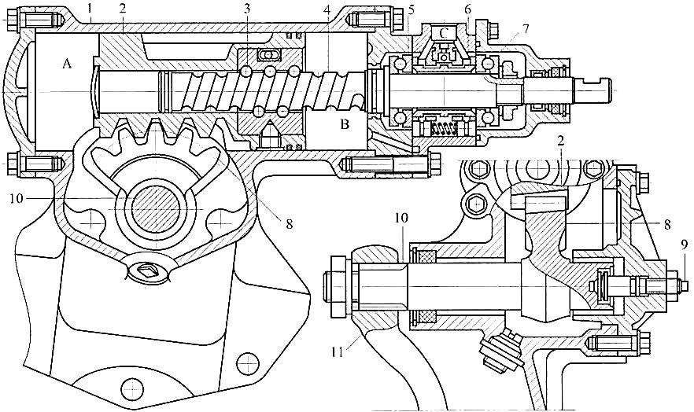
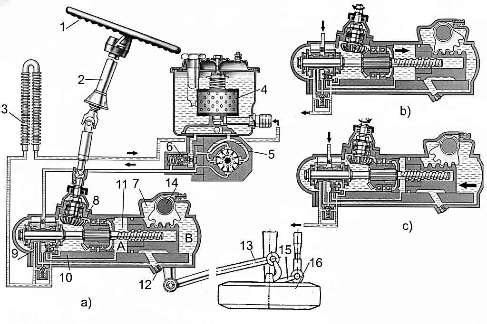
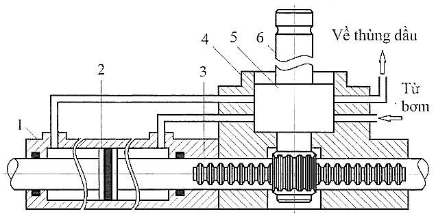
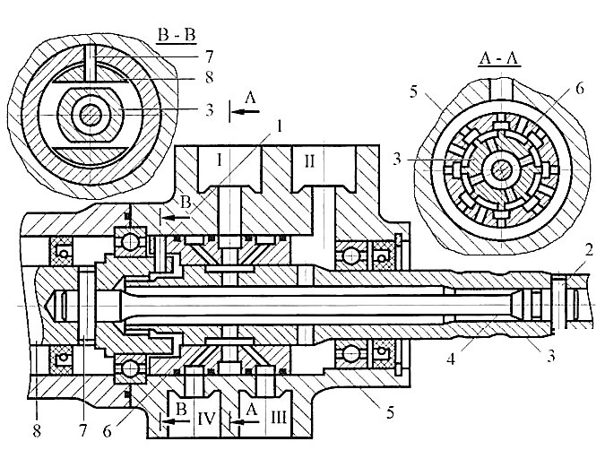

a. Khái niệm
Hệ thống lái trợ lực thủy lực sử dụng áp suất dầu để hỗ trợ người lái khi xoay vành tay lái. Khi hệ thống hoạt động, áp suất thủy lực được tạo ra bởi bơm dầu giúp giảm lực cần thiết tác động lên vành tay lái, đặc biệt khi xe đang đứng yên hoặc chạy chậm.
b. Cấu tạo hệ thống

Hình 9.30 Các kiểu bố trí trợ lực lái trên ô tô
1.Van phân phối; 2. Cơ cấu lái; 3. Xi-lanh lực; 4. Bơm dầu
Hệ thống lái trợ lực thủy lực thông thường bao gồm các bộ phận chính sau:
- Bơm dầu trợ lực: thường là loại bơm cánh gạt, dẫn động từ trục động cơ qua dây curoa.
- Van phân phối (van trượt): điều khiển hướng dòng chất lỏng thủy lực đến xi-lanh trợ lực theo hướng quay vành tay lái.
- Xi-lanh trợ lực: tích hợp với cơ cấu bánh răng – thanh răng, tác động trực tiếp lên thanh răng để quay bánh lái.
- Bình chứa dầu: chứa chất lỏng thủy lực, nối với bơm thông qua ống dẫn hồi.
- Đường ống cao áp và hồi: dẫn dầu từ bơm đến van trượt và từ xi-lanh trở về bình chứa.
Hình 9.30a: Van phân phối, xi-lanh lực và cơ cấu lái được bố trí chung một khối. Loại này hệ thống lái có kích thước nhỏ gọn, ít đường ống dẫn và có độ nhạy cao. Tuy nhiên kết cấu hệ thống phức tạp, các chi tiết của dẫn động lái chịu tải lớn. Sử dụng trên xe Zil 130, Zil 131, KAMAZ, và trên các loại xe du lịch, xe tải mới hiện nay: Hyundai Universal, Hino
Hình 9.30b: Van phân phối, xi-lanh lực và cơ cấu lái bố trí riêng rẽ. Loại này đảm bảo giảm được tải trọng cho đa số các chi tiết của hệ thống lái. Tuy nhiên số lượng các khâu liên kết tăng lên, chiều dài các đường ống tăng và giảm độ nhạy của hệ thống lái. Dùng trên xe Gaz-66.
Hình 9.30c: Van phân phối và xi-lanh lực bố trí liền nhau và tách biệt với cơ cấu lái. Loại này giảm được chiều dài các đường ống, đảm bảo an toàn cho hệ thống lái khi xe chạy trên đường xấu. Dùng trên xe Maz-500, KRAZ-255B.
Hình 9.30d: Van phân phối, cơ cấu lái bố trí liền nhau và tách biệt với xi-lanh lực. Loại này đảm bảo độ nhạy của hệ thống lái cao. Dùng trên xe Ural-375D.
c. Nguyên lý làm việc
Khi vành tay lái ở vị trí trung gian, van phân phối đóng các đường dầu vào xi-lanh, dầu từ bơm hồi thẳng về bình chứa dầu. Khi người lái xoay vành tay lái, van xoay mở thông đường dầu áp lực vào một bên xi-lanh, đồng thời cho dầu ở phía bên kia xi-lanh hồi về bình chứa dầu. Chênh lệch áp suất hai bên pít-tông tạo lực đẩy pít-tông di chuyển, kéo theo thanh răng (hoặc trục vít) giúp quay bánh xe theo hướng người lái mong muốn.
Mức trợ lực phụ thuộc vào độ vặn của thanh xoắn trong van – tức là phụ thuộc lực mà người lái tác dụng. Khi người lái ngừng xoay, lực vặn biến mất, van trở về trung gian, và pít-tông giữ vị trí mới. Nếu trợ lực mất (do chết máy hoặc bơm hỏng), người lái vẫn có thể điều khiển xe nhưng sẽ rất nặng do phải thắng cả lực cản của dầu trong xi-lanh.
Ưu điểm: Hệ thống trợ lực thủy lực cho cảm giác lái tự nhiên, phản hồi tương đối tốt về mặt đường. Kết cấu đã được tiêu chuẩn hóa và độ tin cậy cao; lực trợ giúp mạnh mẽ phù hợp cả cho xe nặng.
Nhược điểm: Luôn tiêu tốn công suất động cơ (bơm chạy liên tục), tốn nhiên liệu. Cấu tạo nhiều chi tiết (bơm, đường ống, dầu) cần bảo dưỡng; nguy cơ rò rỉ dầu. Đặc biệt, mức trợ lực cố định, thiếu linh hoạt theo tốc độ – dẫn đến việc tay lái có thể quá nhẹ ở tốc độ cao hoặc còn nặng khi tốc độ rất thấp.
Các bộ phận chính của hệ thống lái trợ lực thủy lực
1. Bơm trợ lực thủy lực
Bơm thường dùng loại bơm cánh gạt do có kết cấu đơn giản, gọn, tạo áp suất ổn định, phù hợp yêu cầu của hệ thống trợ lực (hình 9.29). Các chi tiết chính gồm:
Vỏ bơm có mặt trong dạng cam lệch tâm.
Rô-to có các rãnh lắp cánh gạt.
Cánh gạt trượt trong rãnh rô-to, tỳ sát vào mặt trong vỏ bơm nhờ lực ly tâm và áp suất dầu.
Cửa hút và cửa đẩy bố trí lệch nhau theo biên dạng cam để tạo Khoang hút và Khoang nén.
Van điều chỉnh lưu lượng (giữ lưu lượng ổn định) và van an toàn (xả bớt áp khi quá tải) tích hợp trong cụm bơm.

Hình 9.31. Cấu tạo bơm thủy lực loại cánh gạt
1. Khoang chứa dầu; 2. Van cánh gạt; 3. Rôto; 4. Van giảm áp; 5. Vỏ bơm
Nguyên lý làm việc
Khi rô-to quay (được dẫn động từ puly trục khuỷu qua dây đai), cánh gạt tỳ vào mặt trong stato, tạo các khoang dầu thay đổi thể tích. Ở vùng cửa hút I và III, thể tích khoang tăng đến dầu từ bình chứa bị hút vào cửa A. Ở vùng cửa đẩy II và IV, thể tích khoang giảm khiến cho dầu bị nén và đẩy ra cửa áp suất cao ở cửa B, đưa tới van điều khiển. Van điều chỉnh lưu lượng đưa lượng dầu thừa trở lại cửa hút để lưu lượng ra ổn định, trong khi van an toàn xả dầu về bình nếu áp suất vượt giới hạn thiết kế.
2. Van điều khiển (van phân phối).
Phân phối dầu áp suất đến một trong hai khoang của xi-lanh trợ lực tùy theo hướng đánh lái, đồng thời xả dầu từ khoang đối diện về bình. Khi vành tay lái ở vị trí trung gian, van ở trạng thái trung gian, dầu từ bơm hồi về bình mà không tạo trợ lực.
* Van trượt điều khiển bằng cơ khí
Cấu tạo (hình 9.32): Ống trượt được dịch chuyển dọc trục nhờ cần liên kết cơ khí với trục lái hoặc cơ cấu lái.
Cơ cấu lái truyền chuyển động quay đến đòn quay 12. Đòn quay 12 được nối với lõi van điều khiển là con trượt 2. Con trượt 2 tác dụng vào vỏ van 4 thông qua các lò xo 3 và 9. vỏ van 4 và Pít-tông sinh lực 7 nối với đòn quay 8 của bánh xe. Con trượt 2, các lò xo 3, 9 và vỏ van 4 đóng vai trò là đòn kéo trong các sơ đồ của hệ thống lái không có trợ lực. Khi người lái quay vành tay lái, đòn quay 12 đẩy vào con trượt 8, thông qua các lò xo 3, 9 và vỏ van 4 đẩy vào đòn quay 8 làm quay bánh xe.

Hình 9.32. Sơ đồ hệ thống lái có trợ lực dùng van trượt và có cơ cấu lái, van điều khiển, bộ phận sinh lực bố trí độc lập
1. Thùng dầu; 2. Lõi van (con trượt); 3, 9. Lò xo; 4. vỏ van; 5. Bánh xe; 6, 7. Xi lanh, Pít-tông lực; 8. Đòn quay bảnh xe; 10. Cơ cẩu lái; 11. Vành tay lái; 12. Đòn quay cơ cấu lái; 13. Bơm thủy lực.
Van điều khiển có 5 cửa: Cửa I và III nối với bơm 13, nhận chất lỏng áp suất cao; cửa II nối với thùng chứa dầu I; cửa IV nối với khoang A và cửa V nối với khoang B của xi-lanh 6.
Khi vành tay lái ở vị trí trung gian, xe đi thẳng, cửa I, III mở, cửa II đóng, chất lỏng áp suất cao từ bơm dầu 13 đi qua các cửa I và III qua cửa V và IV đến cả 2 phía của Pít-tông 7, giữ cho bánh xe song song với phương chuyển động của xe và tránh cho bánh xe không bị lệch hướng khi chịu chấn động nào đó từ mặt đường. Áp suất chất lỏng trong cả hai khoang A và B cũng có tác dụng ngăn cản các chấn động từ mặt đường lên vành tay lái.
Khi người lái đánh vành tay lái sang trái, đòn quay 12 đẩy con trượt 2 sang phải. Con trượt 2 thông qua lò xo 3 đẩy vào vỏ 4 và vỏ 4 đẩy vào đòn quay 8 đề làm quay bánh xe 5. Thoạt đầu lực từ vành tay lái chưa đủ thắng lực cản bánh xe, bánh xe sẽ không quay do đó vỏ van 4 chưa di chuyển. Vì thế con trượt 2 sẽ dịch chuyển sang phải so với vỏ 4 và lò xo 3 bị nén lại. Do vỏ 4 đứng yên, con trượt 2 di chuyến sang phải nên cửa I bị đóng lại và cửa II được mở ra. Thời điểm đóng cửa I và mở cửa II tương ứng với lực trên vành tay lái đạt giá trị Fo- Chất lỏng từ khoang B thoát qua cửa V, rồi qua cửa II về thùng dầu 1. Áp suất chất lỏng ở khoang A đẩy Pít-tông sang phải, kéo theo đòn quay 8 và làm quay bánh xe 5 sang trái.
Khi người lái đánh vành tay lái sang phải, đòn quay 12 kéo con trượt 2 sang trái, thông qua lò xo 9 đẩy vỏ van 4 sang trái, vỏ van 4 kéo đòn 8 sang trái và làm quay bánh xe 5 sang phải. Tương tự như trường hợp quay vành tay lái sang trái, khi lực người lái chưa thắng được lực cản của bánh xe 5 thì bánh xe không quay, do đó vỏ van 4 chưa di chuyển sang trái. Con trượt 2 sẽ nén lò xo 9 và dịch chuyển sang trái so với vỏ van 4. Khi lực trên Vành tay lái đạt giá trị Fo cửa III đóng lại và cửa II mở ra. Chất lỏng từ khoang A thoát qua cửa IV và II về thùng 1. Áp suất chất lỏng khoang B đẩy Pít-tông sang trái, đẩy đòn 8 sang trái và làm quay bánh xe 5 sang phải.
Khi người lái đang đánh vành tay lái (ví dụ sang phải) rồi dừng lại. Khi đó, cửa I và II đang mở, chất lỏng áp suất cao đang sang khoang B và chất lỏng khoang A đang về thùng, bánh xe tiếp tục bị đẩy sang phải. Do người lái dừng lại nên con trượt 2 đã dừng lại nhưng vỏ van 4 nối với bánh xe tiếp tục bị đẩy sang trái nên làm đóng cửa II lại và duy trì áp suất bên phải Pít-tông tương ứng với vị trí của Vành tay lái.
Hệ thống lái trục vít – thanh răng – cung răng có trợ lực thủy lực

Hình 9.33. Hệ thống lái trục vít - đai ốc - bi - thanh răng - cung răng có trợ lực thủy lực (Zil 130)
1. Xi lanh lực; 2. Đai ốc — thanh răng -Pít-tông lực; 3. Các viên bi; 4. Trục vít; 5, 7. 0 bi chặn; 6. Con trượt; 8. Cung răng; 9. Ốc điều chỉnh; 10. Trục của cung răng; 11. Đòn quay.
Vỏ cơ cấu lái (1) đồng thời là xi-lanh lực, đai ốc – thanh răng (2) đồng thời là pít-tông sinh lực (trợ lực).
Trục vít (4) được dẫn động từ Vành tay lái thông qua trục lái. Phía phải của trục vít (4) đặt van điều khiển dạng trượt, trong đó con trượt (6) của van được cố định trên trục vít bằng hai ổ bi chặn (5) và (7). Thanh răng (2) ăn khớp với cung răng (8) và đòn quay (11) được lắp vào trục (10) của cung răng (8). Pít-tông (2) chia xi-lanh (1) thành khoang A và khoang B.
Chất lỏng có áp suất cao được nạp vào cửa C (cửa C lắp ống dẫn từ bơm thủy lực). Con trượt (6) sẽ điều khiển dòng chất lỏng áp suất cao đi đến các khoang A và B của xi-lanh (1).
Khi xe đi thẳng, Vành tay lái ở vị trí trung gian, con trượt (6) của van điều khiển ở vị trí trung gian và mở các cửa để chất lỏng áp suất cao đi vào cả khoang A và B, giữ cho đai ốc – thanh răng – pít-tông (2) ở vị trí trung gian.
Khi quay vòng, người lái quay Vành tay lái, thông qua trục lái làm quay trục vít (4). Đai ốc – thanh răng (2) trượt dọc trên trục vít (4), làm quay cung răng (8), trục cung răng (10) làm quay đòn quay (11), qua dẫn động lái làm quay bánh xe dẫn hướng.
Khi lực trên Vành tay lái nhỏ, chưa vượt thắng được mô men cản quay vòng của bánh xe thì đai ốc – thanh răng (2) chưa chuyển động. Do vậy, trục vít sẽ trượt dọc trên đai ốc – thanh răng (2) mang theo con trượt (6). Con trượt (6) sẽ di chuyển và thực hiện đóng mở các cửa của van điều khiển.
Khi lực trên Vành tay lái đạt giá trị quy định theo thiết kế, con trượt (6) sẽ mở cửa để chất lỏng có áp suất cao từ khoang A (hoặc B tùy thuộc quay vòng trái hoặc phải) thoát về thùng dầu (thùng chứa). Chênh lệch áp suất giữa khoang A và B sẽ đẩy pít-tông (2) dịch chuyển để hỗ trợ lực cho người lái.
Hoạt động của van điều khiển trên Hình 9.33 tương tự như van điều khiển thể hiện trên Hình 9.32.
Để tăng tuổi thọ cho cặp thanh răng – cung răng, mặt răng của các răng kề nhau không được chế tạo song song tuyệt đối (thường có độ côn hoặc góc nghiêng nhất định).
Khi bị mòn, vành tay lái (Vành tay lái) bị "rơ" (có độ rơ, độ dơ), người ta dịch chuyển cung răng (8) sang trái bằng bu lông điều chỉnh (9).

Hình 9.34. Sơ đồ nguyên lý làm việc của hệ thống lái xe Kamaz 5320.
a) Trạng thái đi thẳng; b) Trạng thái quay vòng phải; c) Trạng thái quay vòng trái.
1. Vành lái; 2. Trục lái; 3. Két làm mát; 4. Lưới lọc dầu; 5. Bơm dầu; 6. Van điều tiết áp suất, lưu lượng; 7. Đai ốc thanh răng (pít tông); 8. Cặp bánh răng côn; 9. Con trượt van phân phối; 10. Vỏ cơ cấu lái; 11. Trục vít; 12. Đòn quay đứng; 13. Đòn kéo dọc; 14. Cung răng; 15. Đòn quay ngang; 16. Bánh xe dẫn hướng.
A: Khoang dầu trái (bên phải pít tông);
B; Khoang dầu phải (bên trái pít tông).
Van quay kiểu thanh xoắn

Hình 9.35. Hệ thống lái bánh răng - thanh răng, trợ lực thủy lực dùng van xoay
1. Xi lanh lực; 2. Pít-tông lực; 3. Thanh răng; 4. Vỏ van; 5. Lõi van; 6. Trục lái.
Hình 9.35 thể hiện sơ đồ hệ thống lái có cơ cấu lái bánh răng - thanh răng với trợ lực thủy lực sử dụng van điều khiển dạng xoay.
Lõi van 5 được lắp với trục lái 6 và bánh răng của cơ cấu lái. Vỏ van 4 có bốn cửa: Cửa dầu đến (từ bơm thủy lực), Cửa dẫn chất lỏng về thùng, Hai cửa dẫn chất lỏng đến khoang trái và phải của pít-tông lực 2.
Lõi van có các lỗ có thể thông hoặc ngắt với các cửa của vỏ van, tùy thuộc vào vị trí tương đối giữa lõi và vỏ.
Khi xe đi thẳng: Các lỗ trên lõi van ở vị trí đưa chất lỏng từ bơm về thùng, do đó các khoang trái và phải của pít-tông 2 có áp suất thấp.
Khi xe quay vòng (ví dụ sang trái): Người lái đánh vành tay lái, trục 6 quay và làm thanh răng 3 dịch chuyển sang trái. Đồng thời, lõi van 5 quay theo, mở đường dẫn chất lỏng áp suất cao từ bơm vào khoang phải của pít-tông 2. Áp suất cao này đẩy pít-tông 2 sang trái, hỗ trợ người lái đánh lái.
Kết cấu của van xoay khá phức tạp và được trình bày chi tiết ở hình 9.36.
Hình 9.36 thể hiện kết cấu một van điều khiển dạng xoay dùng trên hệ thống lái có trợ lực thủy lực. Lõi van trong 3 được nối với trục lái và nhận lực điều khiển của người lái từ vành tay lái. Lõi van 3 dẫn động thanh xoắn 4 bằng chốt 2. Thanh xoắn 4 nối với trục bị động 8 của cơ cấu lái bằng chốt 7. Trục 8 có thể là trục bánh răng trong cơ cấu lái bánh răng - thanh răng, có thể là trục vít trong cơ cấu lái trục vít - đai ốc - thanh răng - cung răng. Phía ngoài lõi van trong 3 lắp lõi van ngoài 6 và lõi van 6 nối với trục 8 bằng chốt 1.
Vỏ van 5 có bốn cửa: Cửa I nối với bơm thủy lực, cửa II nối với thùng dầu, cửa III và IV nối với hai khoang của xi-lanh lực (ví dụ theo sơ đồ, cửa III và IV nối với khoang trái và phải pít-tông 2). Các cửa này không nằm cùng trên một mặt phẳng (hình 9.36 vẽ các cửa nằm trong cùng mặt phẳng bản vẽ). Lõi van ngoài 6 có 4 lỗ khoan thẳng và ứng với các lỗ thẳng này có 2 lỗ khoan chéo, do vậy trên mặt van có tổng cộng 12 lỗ. Lõi van trong 3 có lỗ nhận dầu đến và lỗ thoát dầu về. Thanh xoắn được tính toán độ cứng để lõi van trong 3 xoay so với lõi van ngoài 6 một góc (khoảng 3°), khi đó van mở để dầu áp suất cao từ bơm đi đến xi-lanh lực.

Hình 9.36. Kết cấu van xoay
1, 2, 7. Chốt; 3. Lõi van trong; 4. Thanh xoắn; 5. Vỏ van; 6. Lõi van ngoài; 8. Trục chủ động của cơ cấu lái (trục bánh răng của cơ cấu lái bánh răng - thanh răng).
Khi quay vòng, người lái quay vành tay lái, qua trục lái làm quay lõi van trong 3, lõi van 3 thông qua chốt 2 làm quay thanh xoắn 4. Do có lực cản quay vòng của bánh xe, nên trục 8 chưa quay, do vậy lõi van ngoài 6 cũng chưa quay, thanh xoắn 4 bị xoắn lại. Khi lực trên vành tay lái đạt Fo (điểm A) thanh xoắn bị xoắn một góc khoảng 3°, tức là lõi van trong 3 xoay đi so với lõi van ngoài 6 khoảng 3°, đủ để nối thông đường dầu từ bơm đến một khoang của xi-lanh lực và nối khoang còn lại với đường dầu về thùng.
Khi đang quay vòng, người lái ngừng quay vành tay lái, khi đó lõi van trong 3 dừng lại, khi đó van đang ở trạng thái như khi quay vành tay lái nên Pít-tông lực vẫn tiếp tục đẩy bánh xe quay, kéo theo trục 8 và lõi van ngoài 6 quay theo, thanh xoắn trở về trạng thái không bị xoắn, đường dầu đến hai khoang của xi-lanh lực bị đóng lại, duy trì áp suất trong hai khoang tương ứng với vị trí của vành tay lái.
Ở mặt cắt B-B ta thấy lõi van trong 3 và trục 8 có một khoảng hở, khi lõi van 3 xoay đi 3° thì chưa chạm vào trục 8. Khi thanh xoắn gãy, lõi van 3 xoay quá 3° và chạm vào trục 8, khi đó lõi van 3 trực tiếp dẫn động trục 8, bộ phận trợ lực không làm việc.
3. Xi-lanh trợ lực (cơ cấu chấp hành)
Các kiểu bố trí xi-lanh trợ lực
Kiểu 1: Xi lanh lực được bố trí chung một khối với van phân phối và cơ cấu lái.
Loại này hệ thống lái có kích thước nhỏ gọn, ít đường ống dẫn và có độ nhạy cao. Tuy nhiên kết cấu hệ thống phức tạp, các chi tiết của dẫn động lái chịu tải lớn. Sử dụng trên xe Zil 130, Zil 131, KAMAZ, và trên các loại xe du lịch, xe tải mới hiện nay: Hyundai Universal, Hino.
Kiểu 2: Xi lanh lực, van phân phối và cơ cấu lái bố trí riêng rẽ.
Loại này đảm bảo giảm được tải trọng cho đa số các chi tiết của hệ thống lái. Tuy nhiên số lượng các khâu liên kết tăng lên, chiều dài các đường ống tăng và giảm độ nhạy của hệ thống lái. Dùng trên xe Gaz-66.
Kiểu 3: Xi lanh lực và Van phân phối bố trí liền nhau và tách biệt với cơ cấu lái.
Loại này giảm được chiều dài các đường ống, đảm bảo an toàn cho hệ thống lái khi xe chạy trên đường xấu. Dùng trên xe Maz-500, KRAZ-255B.
Kiểu 4: Xi lanh lực bố trí riêng biệt. Van phân phối và cơ cấu lái bố trí liền nhau.
Loại này đảm bảo độ nhạy của hệ thống lái cao. Dùng trên xe Ural-375D